Arctic Frontiers - Outstanding Poster Award
Traveled to Tromsø, Norway for the 2026 Arctic Frontiers Conference to present my research from ACEP. I won the Outstanding Poster Award and was invited to return next year. It was also Sámi National Week and I was excited to learn more about the Sámi culture.
Leveraging Geothermal Energy for Sustainable Maritime Refueling in Alaska
This map, made in Python, brings to life my work at the Alaska Center of Energy and Power (ACEP), where I identified five strategic Geothermal-to-X locations to drive Alaska's transition toward sustainable maritime energy. This full work was recently published in Clean Technologies.
Geophysical Monitoring of Wood Ash
Wood ash is often used as a soil amendment, known to raise pH and add nutrients. As part of Dr. Saneiyan's Electrical Geophysics class, we were tasked with monitoring the extent to which the ash's dissolved ions increased soil resistivity using ERT and EMI.
Cartography Hobbyist


 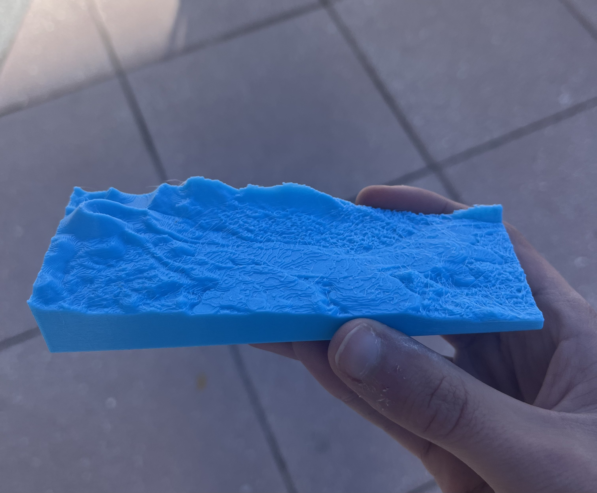
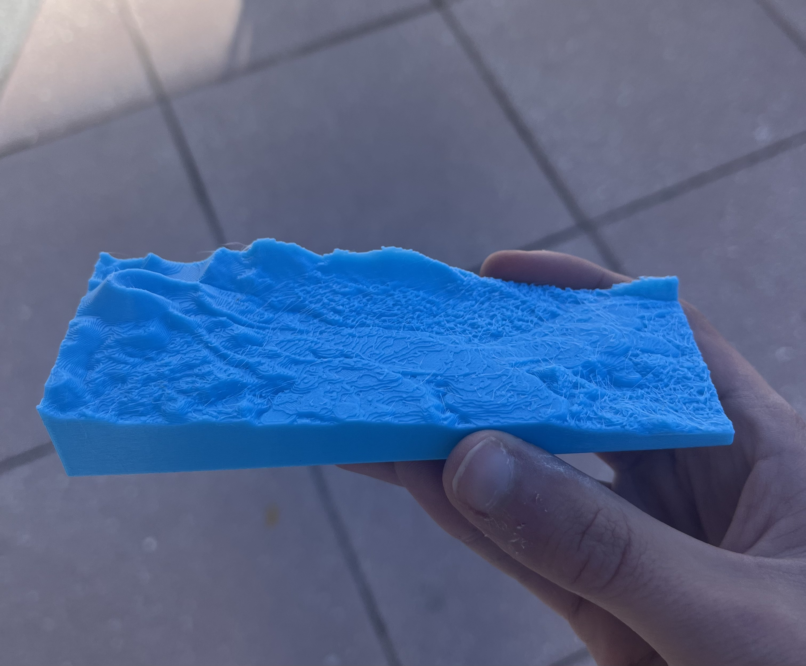
In an effort to learn QGIS, I've taken map-making as a hobby. These maps bridge technical geospatial analysis with an artistic vision, important for communicating results.
Arctic Arteries

 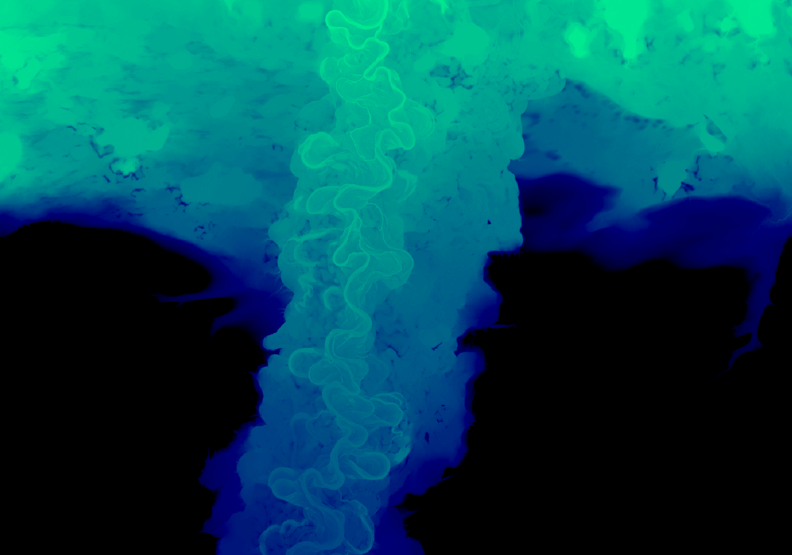
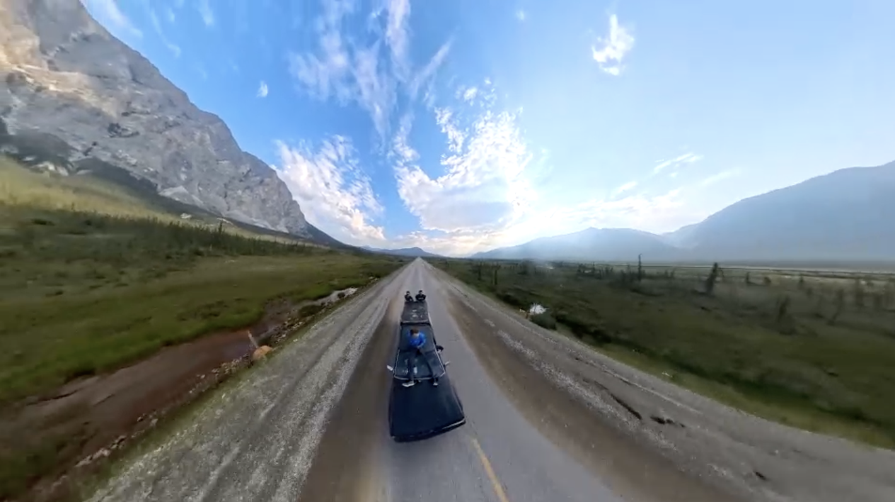
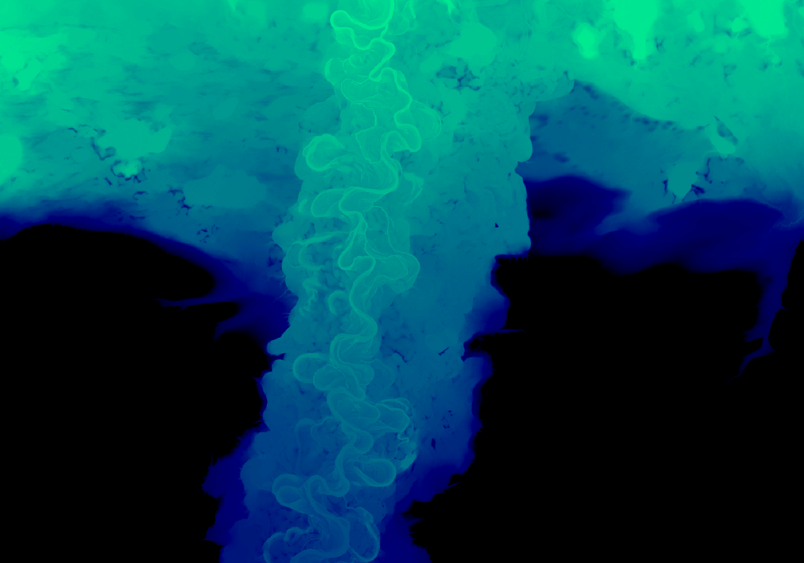
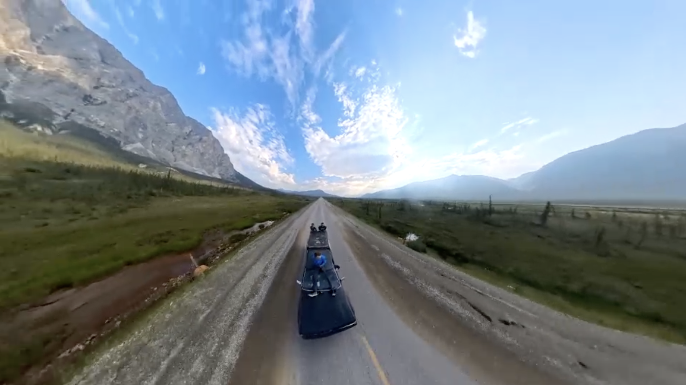
Working at ACEP was enlightening in more ways than one. One of my favorite excursions was driving up the Dalton Highway. It was clear what an important role rivers play in the Yukon Flats. This project, entered in Binghamton’s Art of Science competition, illustrates the intricate meander patterns of Arctic river systems.
Permafrost Policy Analysis
Attending the GEODE and Sustainable Alaska Energy Conference made it clear the importance of policy to energy and climate. Inspired, I took International Environmental Policy, in which my final paper was a comparative analysis of national-level permafrost policy in Russia and Canada.
Kilauea Seismicity
At Texas A&M's Geophysics Summer School I worked in a group of three students and Dr. Xiaowei Chen to map the seismicity of the 2018 Kilauea summit collapse.
Geothermal Mapping: Binghamton, NY
Funded by Binghamton's Summer Scholar's Program, I worked with Dr. Pietras to synthesize thousands of O&G records in NY and PA. My ultimate goal was to create an accurate profile of Binghamton to evaluate direct geothermal potential at the University.
Smartphone Magnetometry
There are millions of abandoned O&G wells across the country. In Dr. Saneiyan's Environmental Geophysics class, we compared a UAV-mounted magnetometer (left) to smartphone magnetometers (right), showing the value of low-cost citizen science tools to quickly detect orphaned wells.
Submarine Groundwater Discharge on Rapa Nui
As part of the First Year Research Immersion Program with Dr. Panzik, my team leveraged Thermal Infrared (TIR) UAV data to understand the seasonality of Submarine Groundwater Discharge (SGD) on Rapa Nui. I continued this work at Green Lakes State Park to understand SGD detection in freshwater bodies.
Western National Parks Course
A 2.5 week field expedition camping through Capitol Reef, Bryce Canyon, Yellowstone, and Grand Tetons National Parks, understanding how geology, ecology, and conservation interact.
Ecology of the Everglades
 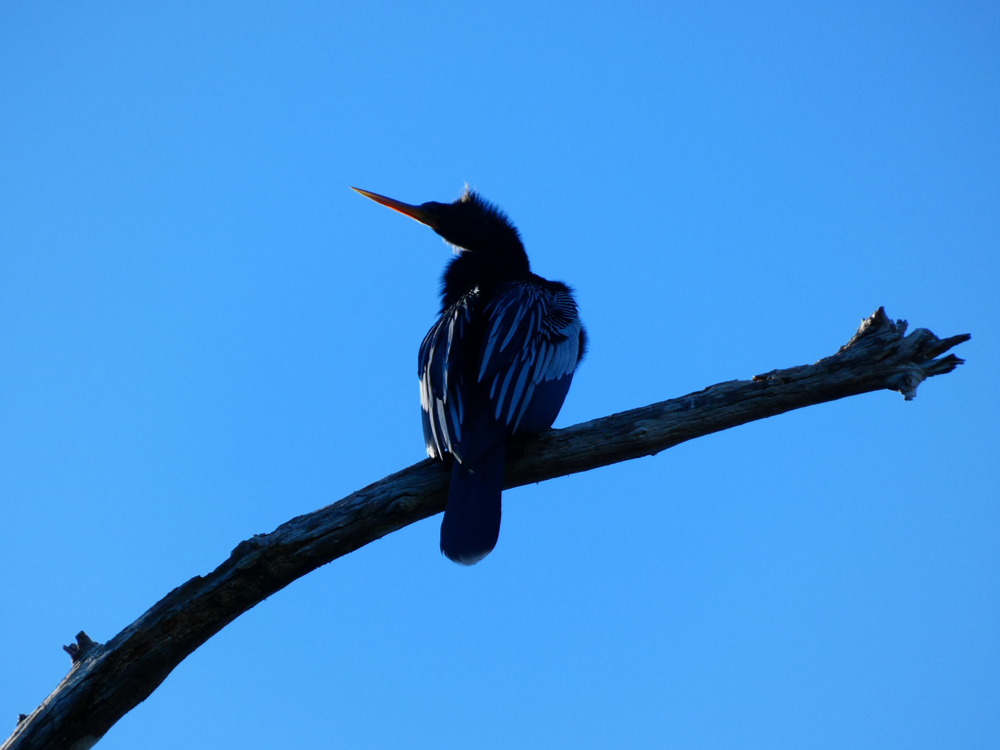
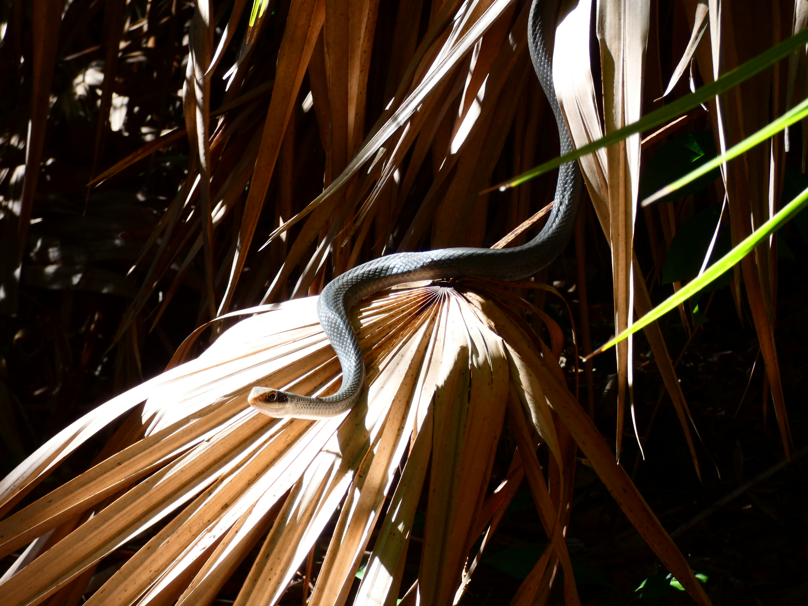
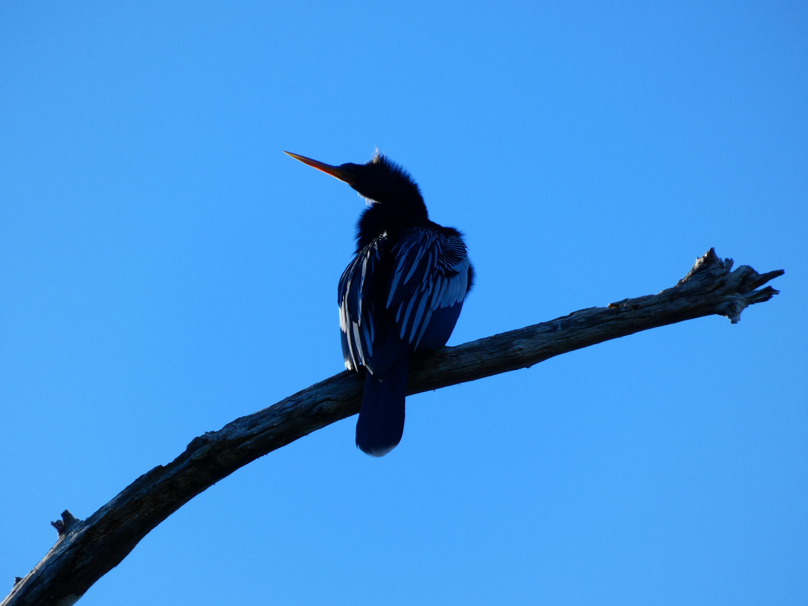
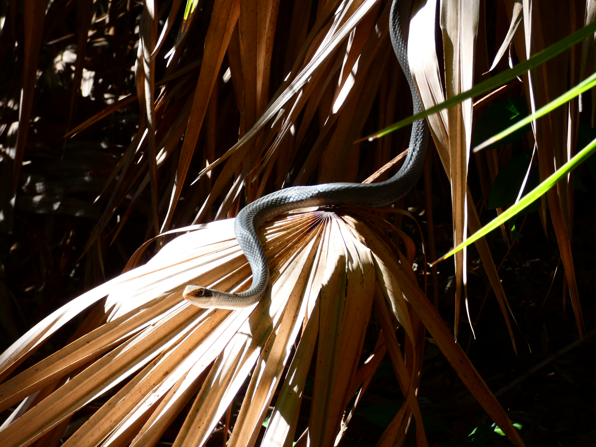
Participated in a two-week field-intensive ecology course in Everglades National Park focusing on wetland hydrology and species interactions.
Ultimate Frisbee
 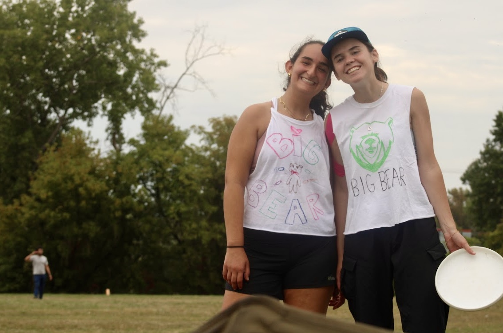
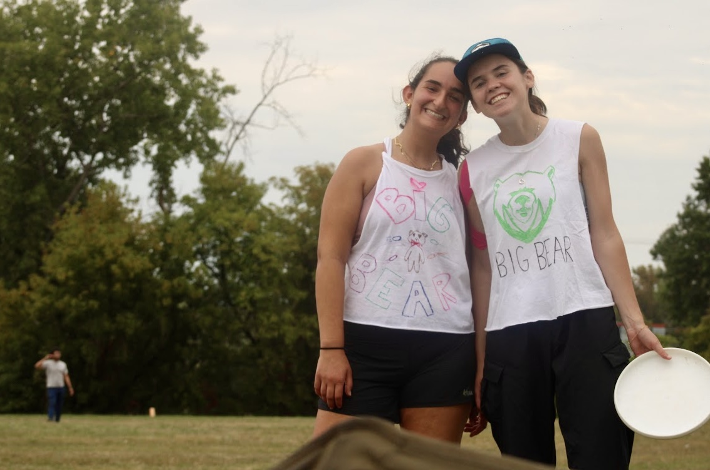
Besides work and school, I'm an avid ultimate frisbee player. For the last two years I have been the captain of Binghamton Big Bear, have gone to College Nationals twice, and play Club over the summers.